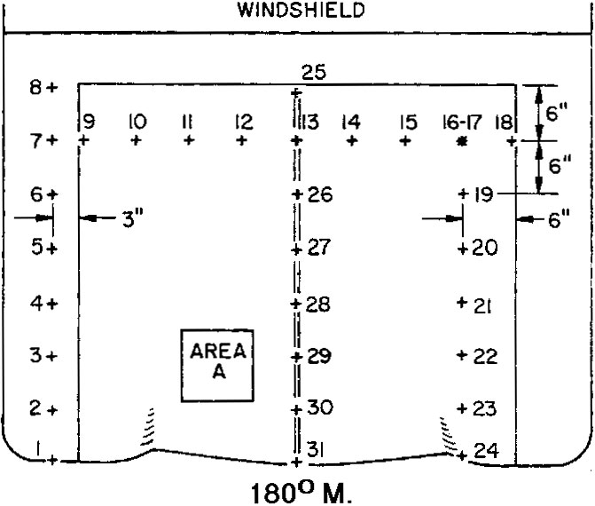

| Home > Rapport Condon > Sommaire > Travail du Projet Colorado |
|---|
Les signalements d'objets volants non identifiés, en particulier ceux rapportés comme ayant été assez proches de l'observateur, décrivent fréquemment des effets physiques dûs à la présence de l'ovni. Les effets les plus fréquemment proclamés sont de nature électrique ou électromagnétique. Ils incluent l'interruption inexpliquée de moteur d'automobile ; des défaillances de phares d'automobile ; l'interférence avec l'opération de radio, T.V., et horloge électrique ; les défaillance de puissance ; des perturbations de champ magnétique ; et les augmentations soudaines et temporaires de niveaux de radiation gamma. Une publication (Hall, 1964) liste 106 cas d'ovnis dans lesquels les effets électromagnétiques sont une caractéristique significative du signalement d'ovni. 45 de ceux-ci impliquent des moteurs d'automobile calés, généralement accompagnés par des défaillances des phares.
Physiological effects of UFOs are also frequently reported. They include strange reactions of animals, feelings of
pressure, heat, or "prickly sensations
," and, occasionally, lapse of consciousness by a human observer.
While such physical or physiological effects are frequently reported, they are not invariably a part of UFO reports. Some report stoppage of the observer's automobile, while others chase the UFOs in their cars, the operation of which is unimpaired. Our field teams also have noted that strange animal reactions, and even interference with telephone operation, have been claimed in cases in which the UFO was later identified as a bird or a plastic balloon. Such instances confuse the issue, but do not prove that in other cases there is no relation between claimed unusual physical and psychological effects and UFO sightings.
Claims of strange animal reactions or unusual human sensations when an UFO is near cannot be verified by examination of residual evidence, for no physical evidence remains after the event. Certain physical effects, however, might be expected to leave a detectable alteration in the affected object, or a permanent record of an instrumented measurement of a physical quantity. Attempts to find and examine such evidence are reported in this chapter.
One expected physical effect is noteworthy because of its absence. In numerous reports, the UFO is seen, visually or by radar, to be moving at presumed speeds far exceeding the speed of sound, yet no sound, particularly no sonic boom, is heard. Our present knowledge of physics indicates that any material object moving through the atmosphere at such speeds would necessarily create a pressure wave in the atmosphere resulting in a sonic boom. This expected physical effect is discussed in Section 6, Chapitre 6.
In 1952-53, Project Blue Book personnel investigated claimed correlations of visual sightings of UFOs with rapid rises of radiation counts on radiation-detecting devices (Blue Book, 1953). The events allegedly occurred near Mt. Palomar Observatory in October 1949, and at the Los Alamos Scientific Laboratory in 1950, 1951, and 1952. Air Force investigators examined their records and searched, as well, for reports of unrecorded UFO sightings. They found no evidence of UFO observations which would correlate with the Los Alamos high-radiation occurrences.
The Blue Book investigators also reviewed a Navy report of the October 1949 incidents at Mt. Palomar. According to the
Air Force report, on two occasions at Mt. Palomar at the same time that radiation detectors indicated a sudden burst
of radiation, "personnel from the observatory observed something in the air."
In one instance, according to the Navy report, the observed object was judged to have appeared similar to a bird. In the other the similarity was to a formation of aircraft. There was strong indication that, whatever the identities of the observed object, the observations and the radiation excursions were strictly coincidental.
No instances of radiation excursions coincident with UFO sightings were reported to the Colorado project, which has therefore not had an opportunity to study at firsthand any possible relationship between such events.
Popular lore associates the presence of UFOs with local disturbances of the earth's magnetic field. "UFO detectors" have been designed to sense such disturbances, sounding an alarm when a sudden change in the magnetic field alters the orientation of a magnet in the " detector."
During the investigative phase of this project, an observer near Denver, Colo., reported that his detector had sounded. He telephoned project headquarters to inform us that he had sighted an UFO overhead. Responding to this call, project investigators drove to the scene and observed a light in the daylight sky pointed out to them by the observer. They watched the light move westward at a rate later calculated to be 15<°/hr. Its coordinates during the period of observation were those of the planet Venus.
The project attempted to verify reports of the association of magnetic disturbances with UFO sightings in the Antarctic during the period March-September 1965 (Project file 1257P). In this effort the project was greatly assisted by Commander Jehu Blades of the NROTC unit at the University of Colorado. Cmdr. Blades had served as commanding officer of the U.S.Antarctic "wintering-over" party at McMurdo Station in 1965. Argentine newspapers had given extensive coverage to a report that on 3 July 1965 personnel of the Orcadas Naval Station in the Antarctic observed the presence of a strange luminous body simultaneously with a small deviation in the earth's magnetic field. The episode lasted for 40 min. Information from the British Antarctic Survey (Blades, 1967) indicated that the British station at Deception Island had received reports of moving colored lights seen from the Argentine station on Deception Island on 7 June, 20 June, and 3 July 1965; from the Chilean station on the latter two dates, and from the British station on 2 July. An UFO observed by two men on 20 November 1965, at an Antarctic field approximately 74°30S, 17°00W, was judged to have been a radiosonde balloon launched from the British station at Halley Bay.
Base Commander C.D. Walter, of the British base at Deception Island recalled receipt, during the early winter of 1965, of a variety of UFO reports from the Argentine station. Reports subsequently came from the Chilean station. The phenomena seen by the Chileans were reported as being above the Argentine base, while those seen by the Argentineans were reported as located above the Chilean base.
Mr. Walter reported that the one observation reported by a member of the British base was made by the cook at the base and was looked upon as rather a joke. There also was a suggestion that practical jokes were being played upon the commandant of the Argentine base.
No UFO observations on Deception Island were made by scientific personnel. Mr. Walter also mentioned that a nacreous cloud was observed at the British Base F on the Argentine Islands on 4 July at the same time as a defect developed in the magnetic instruments. While the instrument fault was soon corrected, misinterpreted radio reports of the event may have led to UFO interpretations, and even to claims of magnetic effects of the UFO.
Dr. Erich Paul Heilmaier, Director of the Astronomical Observatory, Catholic University of Chile, reported that observations of white luminous flying objects, made by nine people at the Chilean "Presidente Aquirre Cerda" Antarctic base on 3 July 1965, were made by untrained persons, and suggested that reports of the observations should be accepted with reserve. The objects were said to have been seen for 20 minutes as they crossed the SW end of Deception Island traveling at "full speed" in a NW-SE direction, at 45° elevation.
According to Dr. Heilmaier's information, the phenomenon was also observed at the British base and the Argentine station, and variations of the magnetic field were recorded by magnetometers at the Argentine station. Dr. Heilmaier was unable to supply details of these observations.
Capt. Jose Maria Cohen, Argentine Navy, reported that the magnetic variations registered on the Deception Island instruments were not outside the limits of normal variation.
Microfilm copies of magnetograms recorded at the Orcadas Observatory on 3 July 1965 were obtained and examined. The magnetic deviation recorded during the reported UFO sighting was small, an order of magnitude lower than deviations observed during magnetic storms, and well within normal daily fluctuations. Consequently, we must conclude that the 1965 Antarctic expedition reports offer little convincing evidence that an unidentified object caused a terrestrial magnetic disturbance. No data which could serve as firm evidence that an UFO caused a magnetic disturbance have been brought to our attention.
Reports of temporary stalling of automobile motors by UFOs constitute one of the more puzzling aspects of UFO reports. The automobiles are invariably reported to operate normally after the UFO leaves the vicinity, and no permanent damage to the car's ignition or lighting system is indicated.
One explanation advanced for such effects has been that UFOs somehow ionize the air to such an extent that normal internal combustion is prevented. This is considered unlikely because no concomitant physiological or physical effects that such ionization would cause are reported. Mechanisms capable of short-circuiting automobile electrical systems do not take into account the claim that normal operation resumes after departure of the UFO.
There remains the hypothesis that automobile motors are stopped or their performance interfered with by magnetic fields associated with UFOs. To test this hypothesis, the project sought, as the first step, to determine the minimum magnetic field strength that would cause motor malfunction. Tests of the effect of a high intensity magnetic field on individual components of an automobile ignition system have been carried out at a major national laboratory using an electromagnet capable of producing a field up to 10 kg (kilogauss) across an area 9 in. in diameter. The engineer has requested that his identity not be disclosed in this report. At a meeting sponsored by the project in Boulder, he presented his experimental results. He used a simplified simulated automobile ignition system, placing each component in turn in the magnetic field, which was increased slowly from --20 kg. The distributor was turned by an electric motor outside the magnetic field. His results are shown in Table 1.
NCAS EDITORS' NOTE: The next table in this chapter is also numbered "1." It is followed by Tables 2 and 3. This was an error in the original text.
| ITEM IN FIELD | Direction du champ | Effets |
|---|---|---|
| Spark Plug | Coaxial avec l'arc | Slightly brighter spark |
| Spark Plug | Perpendiculaire à l'arc | Moved arc to side of electrodes, 20 kilogauss did not stop arcing. |
| Coil (Steel Container) | Perpendicular à la ligne de centre | Occasionally interrupted spark at 20 kilogauss. |
| Coil (Aluminum Container) | Perpendicular à la ligne de centre | Spark started missing at about 4 kilogauss, stopped at 17 kilogauss. |
| Lead acid battery with resistive load (lA current) | Parallèle aux battery plates | Voltage dropped from 12.3 at zero field to 12.0 at 20 kilogauss. |
| Light | Parallèle et perpendiculaire au filament | No effect on brightness or current (resistance) up to 20 kilogauss. |
The spark plug was at atmospheric pressure with a normal gap of about 0.025 inches.
Two coils were used, a 12V aluminum-cased coil, without a voltagedropping resistor, typical of European cars, and a 6V steel-cased coil of American manufacture. The iron core of the aluminum-cased coil saturated at 16 kg. When the core is saturated, the charging current does not change the magnetism enough to generate a high voltage. The steel casing of the 6V coil apparently provided enough magnetic shielding to extend the saturation point to something greater than 20kg. external field.
If we accept these measurements, they indicate that a car with its ignition coil in a steel container (standard in cars of American manufacture) would continue to operate in magnetic fields less than 20 kg. However, since the entire ignition system is shielded by the steel hood and body of the car, it is apparent that very intense magnetic fields external to the car would be required if automobile stoppage should be due to magnetic effects.
Rather than attempt to assess the probability that intense magnetic fields are generated by UFOs, or to calculate hypothetical field intensities at variable distances from an UFO, we chose to test the magnetic field hypothesis by looking for direct evidence that automobiles reportedly affected by the presence of UFOs had in fact been subjected to the effects of a magnetic field that was sufficiently intense to cause motor malfunction. Magnetic mapping of car bodies as a means of obtaining information about the magnetic history of an automobile was suggested by Mr. Frederick J. Hooven, formerly of the Ford Motor Company, and now Adjunct Professor of Engineering Science at the Thayer School of Engineering, Dartmouth College, Hanover, N.H. Mr. Hooven and members of the General Parts Division of Ford Motor Company, notably Mr. David F. Moyer, manager of advanced manufacturing engineering, applied the magnetic mapping technique to an automobile that had allegedly been directly beneath an UFO for several minutes. During that time, the driver reportedly could not accelerate the automobile, which seemed to be moving under the control of the UFO. Residual radio and car instrument malfunctions also were claimed. The full study of this case, carried out at the expense of the Ford Motor Company, is reported as cas 12. A summary of the magnetic signature aspects of the case is presented by Mr. Hooven as follows:
When a piece of ordinary low-carbon steel, such as automotive sheet metal, is stressed beyond the elastic limit, as in forming or stretching, it becomes "work-hardened" to an extent sufficient to enable it to retain a substantial degree of permanent magnetism. Thus, it ordinarily will retain a substantial portion of the earth's magnetic field as it existed at the time of forming. This can easily be demonstrated by hammering a nail on an anvil, with the nail pointing north/ south, which will result in permanently magnetizing the nail in the direction of the earth's field.
The external sheet metal parts of an automobile, such as the door panels, hood, deck lid, roof, and minor body panels, are ordinarily formed under conditions that remain constant for the duration of the yearly model, and often for three or four years. Thus, the parts of a given make and model car are all likely to have come from a single source, or at the most two sources, no matter where the car is assembled. The dies that form these parts ordinarily remain undisturbed during the service life, subject to repeated blows that cause them to become magnetized by the magnetic field of the earth, and forming parts that all take on a similar pattern of magnetism.
Other processes that leave their magnetic imprint on the sheet metal parts of the car, are the use of magnetic lifting devices, spot-welding, and (where used) chrome plating, with the result that each make and model car has a pattern of magnetism retained in its sheet metal parts that is as distinctive of that make and model as a finger print is of an individual.
This characteristic was utilized in the tests reported in Case 12, as a suggested technique whereby vehicles could be examined for some indication of their history so far as magnetic environment is concerned. The vehicle was carefully mapped with a magnetometer, and the complex pattern of magnetic remanence was compared with that of three other vehicles of the same make, model, and year chosen at random. It proved to be identical to two of them; it was established that the third had been wrecked and repaired.
It was not established by these tests just what strength of magnetic field would be required to change the established pattern of the production vehicle, but it is obviously a greater amount than a car experiences in the normal course of its life. It was likewise assumed that this value would be smaller than any field capable of interfering with the car's operation.
Since the magnetic pattern on the tested car was substantially unchanged from new, it was concluded on the basis of the above assumptions that the car has not been subject to any ambient magnetic field, either unidirectional or alternating, of sufficient intensity to interfere with its normal functioning. This would have been sufficient to conclude that the permanent magnets in the car could not have been demagnetized, as was at first suspected, without the necessity of removing the instruments for testing, since any field that would have affected the permanent magnets in the car would have been sufficient to change the retained magnetism in the car's sheet metal.
Magnetic effects have been considered to be the most plausible causes of reported automobile malfunctioning in UFO encounters, and the magnetic-mapping technique offers an effective means of determining whether or not a given vehicle has been subjected to intense fields. It does not provide information respecting other possible environmental causes of vehicle malfunction.
Mr. Hooven's assumption that the minimum strength of magnetic field required to change the established magnetic pattern would be smaller than any field capable of interfering with the cars operation has been verified by a test with 1 kg. field. A magnetron magnet was passed over specified points on the front deck of a 1962 Chevrolet Corvair, and the alteration in magnetic pattern was noted. A 0.4 cm. paper tablet was kept between the magnet and the car deck to prevent physical contact. The maximum field strength penetrating the tablet was measured with a Bell "120" gaussmeter, with Model T-1201 probe, and was found to be 1 kg. (One inch away from the tablet, which was held against the magnet poles, the maximum field was measured as 235 g.). The observed alterations in magnetic pattern are shown in Table 1 which gives the directions a compass needle pointed when the compass was placed on the selected test points 6 in. apart located as shown in Fig. 1. The measurements also demonstrate both the permanence of pattern alteration and alteration due to bending and straightening of the car deck. The car was facing 180° T. during all measurements.
The third and fourth columns of Table 1 show definitely that the passage of 1-kg. magnetic field completely determines the residual magnetic pattern. Subsequent compass readings, except for unexplained anomaly at point 29, show the last alteration to be the one retained. The car under study was involved in a collision on 21 August. Figures in the right column of Table 1 show the magnetic pattern after straightening and repainting. All compass readings shown are accurate to within 2°-3°. Each set of readings was recorded without reference to prior readings, with which they were compared only subsequently. The reproducibility, in most cases, is surprising. When test points were near sharp changes in magnetic orientation, a slight error in point relocation
| N° Point de test | Compass Readings 18 July 1968 | Subsequent Compass Readings | ||||
|---|---|---|---|---|---|---|
| Original | Après passage of magnet, N pole on E side of point | Après passage of magnet, N pole on W side of point | 5 Août | 15 Août | Après collision and repair | |
| 25 | 29 | 295 | 68 | 66 | 68 | 60 |
| 13 | 38 | 275 | 80 | 78 | 78 | 70 |
| 26 | 349 | 275 | 89 | 90 | 89 | 44 |
| 27 | 10 | 275 | 91 | 90 | 90 | 67 |
| 28 | 22 | 280 | 85 | 72* | 67 | 53 |
| 29 | 13 | 265 | 85 | 52* | 39 | 1 |
| 30 | 13 | 271 | 76 | 12* | 10 | 352 |
| 31 | 6 | 305 | 26 | 355* | 2 | 3 |
|  |
| Lectures compas | |||
|---|---|---|---|
| N° Point de test | 18 Juillet | 5 Août | 15 Août |
| A-1 | 74 | 69 | 63 |
| A-2 | 98 | 105 | 108 |
| A-3 | 127 | 150 | 147 |
| A-4 | 153 | 178 | 175 |
| A-5 | 171 | 192 | 190 |
| A-6 | 176 | 200 | 207 |
| A-7 | 58 | 48 | 45 |
| A-8 | 79 | 66 | 72 |
| A-9 | 104 | 112 | 112 |
| A-10 | 132 | 162 | 158 |
| A-11 | 159 | 195 | 192 |
| A-12 | 176 | 221 | 220 |
| N° Point de test | Lectures compas | |||
|---|---|---|---|---|
| Original 18 Juillet |
5 Août | 15 Août | Post Wreck 4 Septembre |
|
| 9 | 310 | 266 | 263 | 275 |
| 10 | 292 | 236 | 228 | 256 |
| 11 | 197 | 130 | 143 | 65 |
| 12 | 56 | 350 | 337 | 56 |
| 13 | 38 | 78 | 78 | 70 |
| 14 | 25 | 317 | 327 | 20 |
| 15 | 22 | 347 | 351 | 5 |
| 16 | 332 | 328 | 331 | 356 |
| 18 | 67 | 69 | 69 | 72 |
would cause major variation in compass readings. Such slight location error probably accounts for the lack of agreement in the 5 August and 15 August columns of Table 1, which shows data taken to test the permanency of a pattern previously scrambled by twisting the magnet over the area. Points A-l through A-12 are specific points 1 in. apart on each of two parallel lines 2 in. apart within Area A. The agreement of the two right columns shows both that the test points were accurately relocated and that the pattern was retained.
While we did not determine the minimum magnetic field which would alter the car pattern, an indication that its value would be only a few gauss is given in data shown in Tables 1 and 2, and Table 1 is included here for that reason.
As seen in Table 3, 5 August readings were significantly different from the original values for all points other than 16 and 18. After the original values were determined on 18 July, the magnet had been passed directly over point 13 and within an inch of point 9 (The magnet was passed over points 1-8 invariable orientation, showing initially that the pattern was thus changed. The data for passage over points 25-31 were chosen for presentation in Table 1 because of the observable determination of residual orientation.) These passes of the magnet, plus its passage over Area A, apparently altered the magnetic pattern at all points which were less than a foot from the magnet (note altered values on 5 August for points 9-15 in Table 3, points 28-31 in Table 1).
More precise quantitative tests of the effect of magnetic fields of varying strength on the residual magnetic pattern of automobiles would be interesting. The above tests, however, show that a 1kg. field is more than adequate to alter this pattern permanently.
One case of reported car stoppage, occurring during the term of the Colorado project, was studied in the field (Case 39) using a simple compass of good quality. The correspondence of magnetic signature of the affected car with that of a comparison car of the same make and model in a different geographical location was striking. The correspondence showed that the automobile in question had not been subjected to a magnetic field of high intensity.
Magnetic mapping of the bodies of automobiles involved in particularly puzzling UFO reports of past years, such as the November 1957 incidents at Levelland, Texas, would have been most desirable, but the cars were no longer available for study.
The technique is simple and would be quite useful to any field team studying an event in which stalling of a car by an UFO is claimed. Investigators should interpret the results with caution, however, since denting and straightening of the car body does alter the magnetic signature. As demonstrated in the test reported above, the signature also can be changed easily with a simple horseshoe magnet.
(Cette section a été préparée par M. R. J. Low)
A listing of electrical power interruptions from 1954 through 1966 appears as Appendix E of the Federal Power Commission report, Prevention of Power Failures. This list contains none of the 15 disturbances of power systems tabulated in The UFO Evidence (NICAP, 1964), and its supplement as Laving been coincidental with sightings of UFOs near the affected power systems.
The 148 power interruptions listed in the resume are those "which were sufficiently important to gain publicity
."
Since none of the reported UFO-related power failures tabulated by NICAP is reflected in the FPC resume, we may
conclude that none of them was of major public consequence. This is also apparent from the descriptions of the
incidents given by the authors of The UFO Evidence.
Rather than investigate events that, from the standpoint of power systems operations and impact on the public, were
not significant, it appeared more fruitful to determine whether there were power failures that could not be
satisfactorily explained. The FPC report for the 13 years from 1954 through 1966 includes a total of 148 failures. In
three instances although the events that initiated the disturbances were identified, the causes are listed as "unknown
."
In one case (Los Angeles, 19 July 1966), the event is described: "Breaker Operations -- Cause Unknown";
in the second (Chicago, 22 Nov. 1966) "Transformer Relay Operation - Cause Unknown
"; and in the third (Austin,
Texas, 14 Dec. 1966): "Lines Tripped Out - Cause Unknown
." It has not been suggested, so far as we are aware,
that these outages are related to UFO sightings. No sighting is listed in the Colorado project's printout of sighting
reports for 19 July or 22 November; a sighting recorded for 14 December occurred elsewhere.
An FPC Order No. 331, issued 20 December 1966, requires all entities engaged in the generation and transmission of electric power to report significant interruptions of bulk power supply to the Commission. Through 12 June 1967, 52 power interruptions were reported in accordance with Order No. 331.
Of the 52, three were not explained. These are, together with the explanatory material given, the following:
Tennessee Valley Authority, 25 February 1967 -- A high temperature detector removed a transformer from service at Johnson City, Tenn. No damage was apparent and when restored to service the transformer continued to function normally. Loads of 36,700 kw. were interrupted for 36 min.
Carolina Power & Light Company, 1 May 1967 -- 25,000 kw. of load in the city of Rocky Mount, N.C., was interrupted for about 1 hr. when the 110 kw. bus at the Rocky Mount substation tripped. Cause of the interruption is unknown.
Pennsylvania Power & Light Company, 12 June 1967 -- Approximately 78000 customers and 163000 kw. of load in Lycoming and Schuylkill counties were interrupted at 2:01 p.m., EDT, when a 330 kv. lightning arrester failed on a 220/66 kv. transformer bank at Frackville Substation. The failure occurred during clear weather and the cause was unknown. Service was restored to 113,000 kw. within 15 mm. and to the remaining 50000 kw. within 24 mn.
Eight UFO sightings are recorded in the project's printout on the date of the first outage, none of them in Tennessee; three on the date of the second, none in North Carolina; and one, not in Pennsylvania, on the date of the third.
The causes of power failures are usually not announced until after the period of most intense public interest has passed. Although usually the cause of the outage will be traced very quickly, power officials may be and often are reluctant to make prompt announcement of it, for fear that subsequent analysis will reveal the initial conclusion to be incorrect. Occasionally, it is several days before the cause is located. The public, however, begins to lose interest in what happened very soon after power is restored, so that circumstances of outages, because they can be determined immediately, are usually reported more fully and covered more prominently than their underlying causes.
J. L. McKinley, Manager of System Operations, Public Service Company Colorado, assisted us with the technical aspects of the study of possible UFO-related electric power system failures. As a member of the North American Power Systems Interconnection Committee, Mr. McKinley is concerned with and informed about all aspects of power generation, transmission, and distribution in the local area and in the nation as a whole. We asked him whether there are power outages, the underlying cause of which remains unexplained. In a letter dated 11 October 1967, he answered as follows:
I am not aware of any major power disturbances the causes of which are concealed behind a cloak of mystery. When we say that a 'cause is unknown', we mean that we have not found, after reasonable inspection, physical evidence of the cause. For example, a transmission line faults, circuit breakers open, and the relays sensing the fault causing the tripout show a ground target, which means that one of the phase conductors has been grounded. If the fault is instantaneous from a lightning strike, the circuit breakers will close, restoring the line in service. If the fault is permanent the circuit breakers will close and again open. In either event an inspection will result; in the case of the lightning strike, some physical evidence of the strike may be evident; in the case of the permanent fault, the cause will be found, perhaps a tree has fallen into the line, etc. If no physical evidence is apparent upon inspection, a subsequent breakdown of some component may result, improper functioning of control or protection equipment may be found on routine tests, or, if the same fault occurs frequently, a much more intensive effort will locate the cause. Sometimes large birds will cause transmission lines to trip and it is very difficult to find evidence of physical damage, the dead bird or feathers, etc. being the only evidence.
Equipment failures causing power outages are usually very easy to locate unless such outages result from the malfunctioning of the more sophisticated types of control or protection devices. Then specialized technicians must resort to extensive testing of the performance of these devices.
Rocky Mountain Power Pool at Casper meeting on 13 June 1967, the North American Power Systems Interconnection Committee meeting at Vancouver, B.C. on 17-18 July 1967, and the Western Operating Committee meeting at Boise on 25-26 July 1967 were asked whether there is reason to suppose that some power interruptions are caused by or related to the appearance of UFOs. None of these experts replied in the affirmative.
In Incident at Exeter (Fuller, 1966), the massive power failure in the Northeast of 9 November 1965 is described as follows:
The blackout caused by the failure of the Northeast Power Grid created one of the biggest mysteries in the history of modern civilization... By November 11, The New York Times was reporting that the Northeast was slowly struggling back toward normal, but that the cause of the blackout was still unknown. Authorities frankly admitted that there was no assurance whatever that the incredible blackout could not happen again, with out warning.
There was a curious lack of physical damage...only a few generators were out of action as a result of the power failure, not a cause. What's more, the utilities were able to restore service with the exact same equipment that was in use at the time of the blackout. What happened that night was not only far from normal; it was mystifying. If there had been a mechanical flaw, a fire, a breakdown, a short circuit, a toppling transmission tower, the cause would have been quickly and easily detected. Mechanically, however, the system as a whole was in perfect repair before and after the failure.
William W. Kobelt, of Walkill, N.Y., is one of the thousands of line patrol observers who, according to The New York Times went into action to try to discover the trouble. He is typical of all the others. He flew over the lines of the Central Hudson Gas and Electric Corporation at daybreak after the blackout. Cruising close to treetop level, he checked wires, insulators, cross arms and structures of the high-power transmission lines. He looked for trees, branches which might have fallen over the wires. "We looked for trouble - but couldn't find any at all," he said. Robert Ginna, Chairman of the Rochester Gas and Electric Corporation, said that his utility had been receiving 200,000 kw. under an agreement with the New York State Power Authority, which operates the hydroelectric plants at Niagara Falls. "Suddenly, we didn't have it," he said. "We don't know what happened to the 200,000 kilowatts. It just wasn't there."
The difficulty was traced to a remote-controlled substation at Clay,N.Y., near Syracuse, where, according to Mr. Fuller, all was found to be in order.
"Something else happened outside Syracuse, however, which was noted briefly in the press, and then immediately dropped without follow-up comment," according to the Fuller account. The "something else" was the sighting of a huge red ball of brilliant intensity about 100 ft. in diameter just over the power lines near the Clay substation. The reported observation by a private flight instructor and his student passenger was made from a plane approaching Hancock Field, Syracuse. Five persons, according to Fuller, including Robert C. Walsh, Deputy Commissioner for the Federal Aviation Agency, reported this UFO sighting, which was said to have occurred at 5:16 p.m., the moment the outage commenced. Observations of other unusual aerial objects, according to Mr. Fuller, were reported from New York City, N.Y., West Orange and Newark, N.J., Philadelphia, Pa., Holyoke and Amherst, Mass., and Woonsocket, R.I. Here is author Fuller's conclusion:
In spite of the lengthy report issued by the FCC, (sic) the Great Blackout has still not been adequately explained. Ostensibly, backup Relay #Q-29 at the Sir Adam Beck generating station, Queenston, Ontario, was eventually pinpointed as the source of the massive failure. But further investigation, hardly noted in the press, showed that nothing in the relay was broken when it was removed for inspection. In fact, it went back into operation normally when power was restored. The line it was protecting was totally undamaged. "Why did everything go berserk?" Life Magazine asks in an article about the blackout. "Tests on the wayward sensing device have thus far been to no avail." A later statement by Arthur J. Harris, a supervising engineer of the Ontario Hydroelectric Commission, indicated that the cause was still a mystery. "Although the blackout has been traced to the tripping of a circuit breaker at the Sir Adam Beck No. 2 plant, it is practically impossible to pinpoint the initial cause." As late as January 4, 1966, The New York Times in a follow-up story indicated a series of questions regarding the prevention of future blackouts. The news item says:
"These questions more or less are related to the cause, still not fully understood, of last November's blackout..."
The A.P.R.O. Bulletin of November-December 1965 expresses a similar view of the events of that night.
Finally, in testimony before a symposium on UFOs conducted by the House Committee on Science and Astronautics on 29 July 1968, Dr. James E. McDonald referred to the possibility that UFOs might have caused the power failure.
Let us now examine the FPC report. Volume I states the "the Commission's initial report, published December 6 1965, pinpointed the initiating cause of the interruption as the operation of a backup relay on one of the five main transmission lines taking power to Toronto from Ontario Hydro's Sir Adam Beck No. 2 Hydroelectric Plant on the Niagara River. This relay, which was set too low for the load which the line was carrying, disconnected the line." Volume III gives the detailed chronology (to the hundredth of a second) of the events following the initial tripout of Q-29, as follows:
The initial event was the operation of a backup relay at Beck Generating Station which opened circuit Q29BD, one of five 230-kv. circuits connecting the generation of Beck to the Toronto-Hamilton load area. Prior to the opening of circuit Q29BD at Beck, these circuits were loaded with Beck generation plus almost 500 megawatts of power flowing to Beck over the two tie lines from New York State. Of this 500 megawatts, about 300 megawatts were scheduled for use in Ontario and the remaining 200 megawatts were in replacement of power flowing from the Saunders plant into New York at Massena. The loading on Q29BD, based on digital computer flows and examination of the Beck Station tie line and totalizing graphic charts, was indicated to be 361 megawatts at about 0.93 power factor and a voltage 248 kv. This pickup setting was, therefore, in excess of the indicated average line loading. The precise cause of the backup relay energization is not known. A momentary and relatively small change in voltage might have been responsible as the pickup setting is inversely proportional to the square of the voltage. Alternatively the line megawatt loading could have increased slightly above 361 megawatts due to a change in system loading or a change in tap position of the phase shifting transformer at Saunders, St. Lawrence. Shortly before circuit Q29BD tripped, a tap setting change had been made in such a direction as to increase the power flow. In any event the pickup setting of the line backup relay was reached and the circuit opened at the Beck end.
The opening of circuit Q29BD resulted in the sequential tripping of circuits Q23BW, Q25BW, Q24BD, and Q30AW. After the opening of the first two circuits, determined by an event recorder at Beck, the oscillograph at Beck started and established the sequential openings of circuits Q25BW, Q24BD, and Q30AW.
The opening of the five Beck 230-kv. circuits occurred over a period of 2.7 seconds, during which the initial flow of 500 megawatts from the western New York area toward Beck reversed and reached an estimated value of about 1,200 megawatts into western New York for a total change of 1,700 megawatts. This surge of excess power continued eastward and southward from Niagara, and back into Canada over the 230-kv. tie line at St. Lawrence. This line was opened by protective relaying and separated the Ontario system, with the exception of Beck and its adjacent area, from the remainder of the interconnection.
Generators in western New York and at the Beck Station accelerated toward an out-of-step condition and separated from the remaining system. The separation from the New York State Electric & Gas system was effected by the opening of the Meyer-Hillside 230-kv. circuit at 3.53 seconds and the Stolle Road-Myer circuit at 3.57 seconds, as recorded by oscillographs at Niagara and Stolle Road. Simultaneously with the separation from New York State Gas & Electric, the PJM system separated from western New York due to the tripping of the Dunkirk-Erie 230-kv. line and the lines running east and west from Warren, Pa.
At almost the same time, separation from central New York began when line protective relays operated to open the two Rochester-Clay 345-kv. circuits at 3.56 and 3.61 seconds. The computer simulation demonstrated that the parallel lower voltage circuits opened immediately thereafter.
Moses-St. Lawrence generating station in northern New York, now connected to New England and central New York, continued to accelerate toward an out-of-step condition, tripping the two Moses-Adirondack circuits at 3.98 and 4.01 seconds. This was followed by automatic generator dropping at Moses-St. Lawrence in an attempt to maintain area stability. At: this late stage, this did not prevent the opening of the Plattsburgh-Essex 230-kv. circuit at 4.11 seconds. Automatic reclosure was unsuccessful on the two Moses-Adirondack 230-kv. circuits at 4.79 and 4.81 seconds. Northern New York was now effectively separated from central New York and New England. The switching sequences in the St. Lawrence area separation were determined from oscillographic records at Moses-St. Lawrence, and were not duplicated successfully in the computer simulation.
The separation of western New York from central New York was followed by the separation of central New York from PJM at approximately 4 seconds with the opening of the 230-kv. Hillside-East Towanda line, the North Waverly-East Sayre line and the Goudey-Lennox line. This separation was followed by a surge of about 900 megawatts from New Jersey to Consolidated Edison across the Fresh Kills-Linden circuit. This caused two lines in series with the Fresh Kills-Linden circuit to open at Greenwood approximately 7 seconds after the initial event. The opening of these circuits separated eastern New York and New England from PJM.
Within 12 min. power generation in lower Ontario, N.Y., and New England (except for Maine and eastern New Hampshire) virtually ceased.
Volume I of the FPC report states that "the causes which can trigger severe disturbances are practically unlimited. Many of them are derivatives of severe storms, seemingly unaccountable equipment failures, or even the fallibility of well trained system operators and maintenance men." The initial disturbances themselves are often quite minor and are sometimes difficult to trace, but the initiating event in the Great Northeast blackout holds no mystery. Quoting from IEEE Spectrum (February 1966):
At 5:16:11 p.m., a backup relay, protecting line Q29BD, operated normally and caused the circuit breaker at Beck to trip the unfaulted line. The power flow on the disconnected line shifted to the remaining four lines, each of which then became loaded beyond the critical level at which its backup protective relay was set to function. Thus the four remaining lines tripped out in cascade in 161 cycles' time (2.7 seconds).
The relay that triggered the disturbance was one of five backup sensing devices (one backup relay per line) that protect the lines against failure of the Beck primary relays, or of circuit breakers at remote locations. According to the FPC report, the five backup relays were installed in 1951, and, in 1956, a breaker on one of the 230-kv. lines failed to open (reason not explained) following a fault. In January 1963, as a result of a re-evaluation study of its backup protection requirements, Ontario Hydro modified these relay settings to increase the scope of their protective functions.
Figure 6 indicates the set of conditions under which this type of relay would trip. The evidence suggests that, at 5:16:11, the load and generation characteristics of the Canada-United States interchange caused such a condition to be reached.
The FPC report further states that the relay settings made in 1963 at the Beck plant were in effect at the time of the November 9 power failure. The backup relay on the line Q29BD was set in 1963 to operate at about 375 MW and the 100 Mvar at a bus voltage of 248 kV and, although the load-carrying capacity of each of these lines is considerably higher, it was necessary to set each backup relay to operate at a power level below the line's capacity to provide the desired protection and to achieve coordination with other relays on the system. This setting was believed to be sufficiently high to provide a safe margin above expected power flows.
When the backup relays were modified and the power levels were set in 1963, the load on the northbound lines from Beck No. 2 was appreciably lower than the trip setting of the backup relay. Recently, the megawatt and megavar loadings on the transmission lines from Beck to the north, because of emergency outages in a new Ontario Hydro steam electric plant, have been very heavy. This temporary situation produced a deficiency in Ontario generation, with the result that a heavier inflow of power from the United States interconnections was necessary.
According to Ontario Hydro spokesmen, the average flow had reached 356 MW (and approximately 160 Mvar) in the line that tripped out first, but momentary fluctuation in the flow is normal. Therefore, at 5:16 p.m., as already mentioned, the power flow apparently reached the level at which the relay was set; it functioned in accordance with its setting, and its circuit breaker tripped out the line. Ontario Hydro also informed the FPC that its operating personnel were not aware that the relay on line Q29BD was set to operate at a load of 375 MW.
De l'ensemble des effets physiques déclarés comme étant dûs à la présence d'ovnis, la défaillance prétendue de moteurs d'automobiles est peut-être la plus intriguante.
La déclaration est faite fréquemment, parfois dans des rapports impressionnants en ce qu'ils impliquent plusieurs témoins indépendants. Les témoins semblent certains que le fonctionnement de leurs voitures a été affecté par l'objet non identifié, qui parfois n'aurait pas été vu avant que la défaillance soit remarquée. Aucune explication satisfaisante à de tels effets, s'ils ont réellement eut lieu, n'est apparente.
A search for residual indirect physical evidence failed to yield any recorded or otherwise verified instances which establish a relationship between an UFO and an alteration in electric or local magnetic fields or in radiation intensity. The Northeast electric power failure appears adequately explained without reference to the action of UFOs. No evidence has been presented to this project that supports the claim that any such power failure was UFO related.
In addition to instrument readings, residual effects on materials can also be investigated. Magnetic mapping of affected automobile bodies, if used with proper reservation, is suggested as one useful procedure for obtaining such evidence, since the original magnetic pattern of the body of a given automobile can be determined.
| Home > Rapport Condon > Sommaire > Travail du Projet Colorado |
|---|